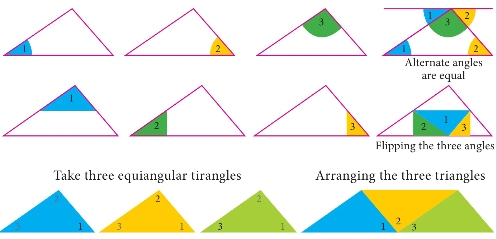
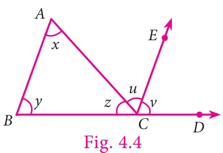
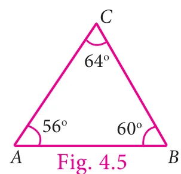
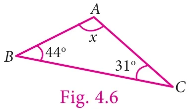
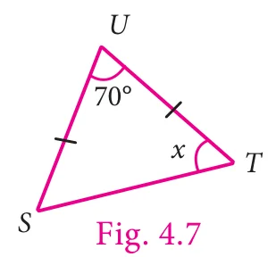
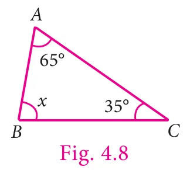

We are familiar with the angle sum property of a triangle which can be stated as the sum of all angles in a triangle is \(180^{\circ}\). We can verify this by doing the following activity.
Activity
Draw any triangle and colour the angles. Check the property as shown below:

From the above we have verified that the sum of three angles of any triangle is \(180^{\circ}\)
From the above activity, we get the result as, the sum of three angles of any triangle is \(180^{\circ}\).
Now we prove the result in a formal method.
Given: A triangle \(ABC\), where \(\angle A = x\), \(\angle B = y\) and \(\angle C = z\).
Now let us prove, \(x + y + z = 180^{\circ}\).

To show this we need to extend \(BC\) to \(D\) and draw a line \(CE\), parallel to \(AB\).
Now \(CE\) makes two angles, \(\angle ACE\) and \(\angle ECD\).
Let it be \(u\) and \(v\) respectively.
Now \(z, u, v\) are the angles formed at a point on a straight line.
Therefore \(z + u + v = 180^{\circ}\). ... (1)
Since \(AB\) and \(CE\) are parallel and \(DB\) is a transversal,
\(v = y\) (corresponding angles).
Again \(AB\) and \(CE\) are parallel lines and \(AC\) is a transversal,
\(u = x\) (alternate angles). Also \(z + u + v = 180^{\circ}\) [by (1)]
Hence, by replacing \(u\) as \(x\) and \(v\) as \(y\), we get \(x + y + z = 180^{\circ}\).
Hence the sum of all three angles in a triangle is \(180^{\circ}\).
Example 4.1 Can the following angles form a triangle?
- \(80^{\circ}, 70^{\circ}, 50^{\circ}\)
- \(56^{\circ}, 64^{\circ}, 60^{\circ}\)
Solution
- Given angles \(80^{\circ}, 70^{\circ}, 50^{\circ}\)
Sum of the angles \(= 80^{\circ} + 70^{\circ} + 50^{\circ} = 200^{\circ} \neq 180^{\circ}\)
The given angles cannot form a triangle.
- Given angles \(56^{\circ}, 64^{\circ}, 60^{\circ}\)

Sum of the angles \(= 56^{\circ} + 64^{\circ} + 60^{\circ} = 180^{\circ}\)
The given angles can form a triangle.
Example 4.2 Find the measure of the missing angle in the given triangle \(ABC\).

Solution
Let \(\angle A = x\)
We know that, \(\angle A + \angle B + \angle C = 180^{\circ}\) (angle sum property)
\(x + 44^{\circ} + 31^{\circ} = 180^{\circ}\)
\(x + 75^{\circ} = 180^{\circ}\)
\(x = 180^{\circ} - 75^{\circ}\)
\(x = 105^{\circ}\)
Example 4.3 In \(\triangle STU\), if \(SU = UT\), \(\angle SUT = 70^{\circ}\), \(\angle STU = x\), find the value of \(x\).
Solution

Given, \(\angle SUT = 70^{\circ}\)
\(\angle UST = \angle STU = x\) [Angles opposite to equal sides]
\(\angle SUT + \angle UST + \angle STU = 180^{\circ}\)
\(70^{\circ} + x + x = 180^{\circ}\)
\(70^{\circ} + 2x = 180^{\circ}\)
\(2x = 180^{\circ} - 70^{\circ}\)
\(2x = 110^{\circ}\)
\(x = \dfrac{110^{\circ}}{2} = 55^{\circ}\)
Example 4.4 If two angles of a triangle having measures \(65^{\circ}\) and \(35^{\circ}\), find the measure of the third angle.
Solution

Given angles are \(65^{\circ}\) and \(35^{\circ}\).
Let the third angle be \(x\)
\(65^{\circ} + 35^{\circ} + x = 180^{\circ}\)
\(100^{\circ} + x = 180^{\circ}\)
\(x = 180^{\circ} - 100^{\circ}\)
\(x = 80^{\circ}\)